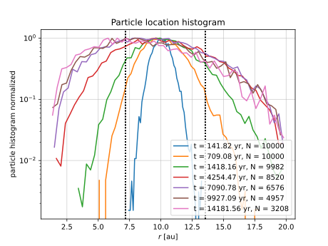

Dust Diffusion test¶
Charnoz et al. 2011 (DOI:10.1088/0004-637X/737/1/33) perform a dust diffusion test in a 2D disk (Sect. 3.3 Radial Diffusion in the Midplane) to test diffusion in the midplane.
This is a reproduction of their test.
particle properties¶
particle size 0.1 micro m resulting in Stokes number of 1e-7 to 1e-8 between 1 and 10 au.
10 000 particles released at 10 au.
Gas disk model¶
\(\rho_g(r,z) = \rho_0 r^p \exp(-\frac{z^2}{2H(r)})\) with \(H(r) = H_0 r^\frac{q+3}{2}\) , thus \(T \propto r^q\).
Surface density profile has an exponent of \(s = p + \frac{q+3}{2}\)
Here, \(p = -2.25\) and \(q = -0.5\), thus \(s = -1\).
The flaring parameter is \(\frac{-0.5 + 1}{2} = \frac{0.5}{2} = 0.25\)
At 1 au, \(\Sigma = 200 \frac{kg}{m^2} = 20 \frac{g}{cm^2}\) and \(T=204 K\), resulting in \(h = 0.040613\) with the values below. At 5.2 au, \(\Sigma = 3.846 \frac{g}{cm^2}\) and \(h = 0.061328\).
Central star mass is 0.5 solar masses.
The model is based upon Brauer et al. 2007 who use a mean molecular weight of 2.3. They use the internal isothermal sound speed \(c_s = \sqrt{\frac{k_B T}{\mu}}\) for \(H = \frac{c_s}{\Omega_K}\), thus the adiabatic exponent is \(\gamma=1\).
Gas not moving radially, \(v_r = 0\) viscosity modelled with \(\alpha=0.01\) which is then the only source of radial particle movement.
System evolved for 15 000 yr with snapshots at 2500, 5000, 10 000, and 15 000 yr.
For the Fargo system, turn off disk evolution to keep the background fixed.
Random number generator for stochastic kicks¶
Sampling from the standard normal distribution is done using the Ziggurat algorithm using a C++ implementation.
The random number generation is done using the JSF algorithm using this implementation.
Results¶
Singlecore test with setup Charnoz2011.yml

The particle location histogram is qualitatively similar to the Charnoz et al. 2011 (see Fig. 5 therein). Thus, physics is modelled correctly.